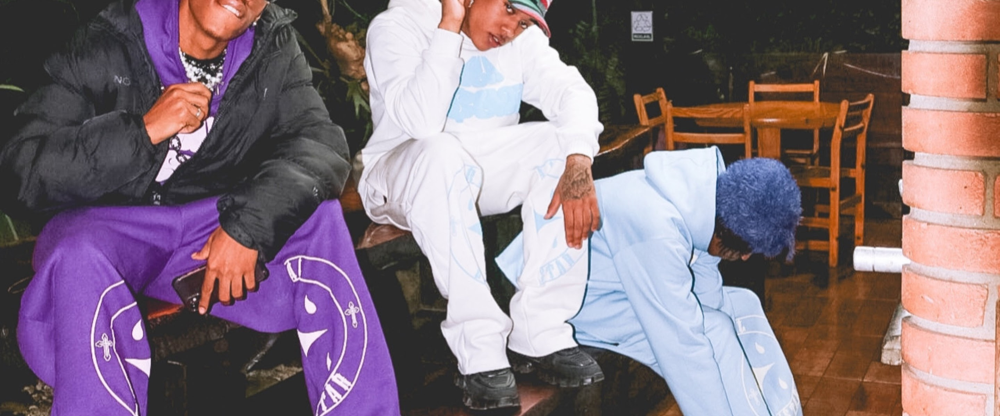
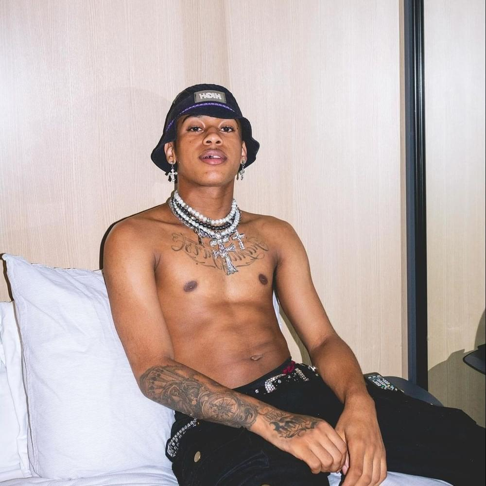

Lh Chuchro
LH CHUCRO, mais conhecido pela música que fez sucesso “Pepp@”, faz parte do estilo streetwear, faz trap, seu nome é Lucas Henrique, e faz parte do grupo BLOCKKSTAR uma marca de roupas que vende gorros, moletons, camisetas, calças, juntamente com o M'dep, Phl Noturnboy e LachefBoy
Conexões
LH tem sua imagem e seu grupo BLOKKSTAR ligado muitas vezes com grupo musical TTF, sendo um dos artistas do Trap brasileiro a ter as previas mais esperadas para os futuros anos, pois o leque de artistas dos dois grupos e suas vertentes proxima são uma combinação esperada pelos fãs
O artista tambem é especulado como nova promessa do trap underground brasileiro alem de ser um dos proximos nomes vinculados ao festival Cena2k.
Confira a performace
… pic.twitter.com/4t2MN8s8Ur
— LH CHUCRO ‚ĺÔ∏èüåê (@lhchucro) January 22, 2024
Spotify
2 L3Trinha
2 L3Trinha foi o primeio projeto grande do artista, tendo faixas como: Pepp@ 2, Mlk Re$Umo, Repara! e Quer Melodia??? como suas faixas princiapis do album e do artista